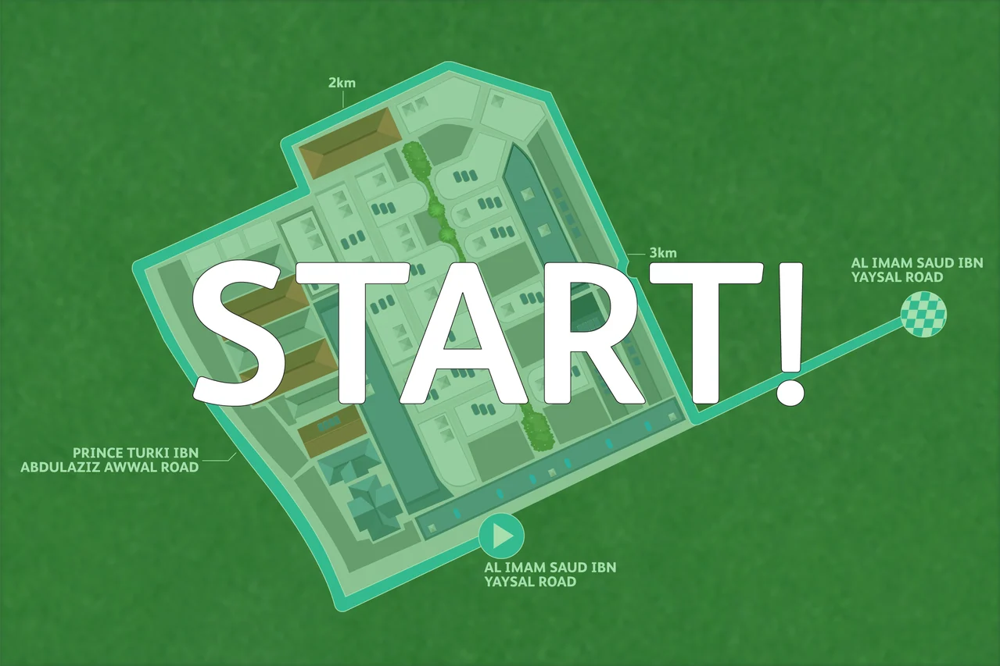
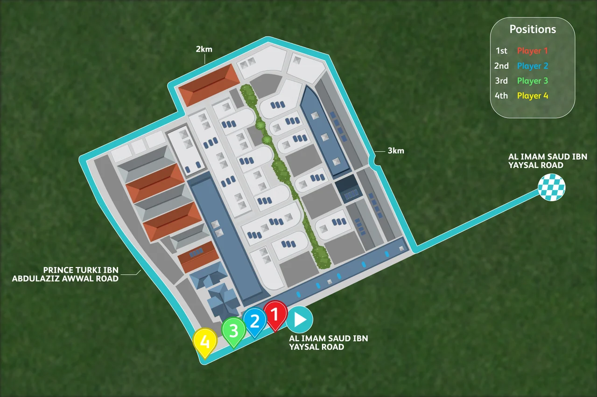
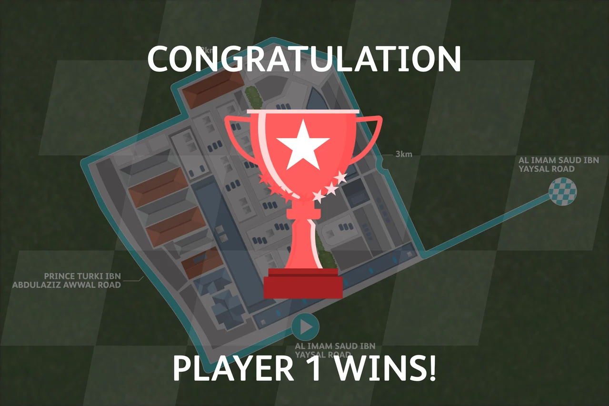

Color-linked player markers
P311 is classified as a multi-project container. This visual record covers only the selected Marathon UI component and makes no whole-folder commission claim.
A shared map with a distinct result moment.
Explore the storyMake player positions and the finish state readable within the same visual system.
A cyan route wraps the building plan toward a checkered marker. Colored pins match the position panel, while the result state dims the map around a central trophy.
P311 is classified as a multi-project container. This visual record covers only the selected Marathon UI component and makes no whole-folder commission claim.
Pages 6 and 8 were selected as complete existing unbranded compositions and exported without changes.
A cyan route follows the perimeter of a simplified building plan and extends toward a checkered finish marker.
Explore the complete compositions and interface states. Select any image for a closer look.
04 / PROJECT IMAGES
Select a view to explore.
Countdown: the route remains visible while a large numeral signals the start of the round.

Start cue: the shared route becomes the stage for the four-player race. Existing venue labels are retained.

Colored markers and a small positions panel keep all four participants legible on the shared route.

The completion state uses a trophy and a large player label. This is saved interface artwork, not a recorded participant result.

Structure, interaction and visual decisions that give the work its character.
RoleConfirm map adaptation, interface layout, player-color system and result-state graphics separately from supplied site drawings, illustrations and software development.
AssetsThe building plan, grass texture, trophy and other visual elements require source attribution. Their presence in Illustrator does not prove original architectural modeling, illustration or game programming.
StatusPrivate study of one selected Marathon UI component within the P311 multi-project container. Native UI states reviewed; player tracking, timing, map accuracy and delivery unverified.